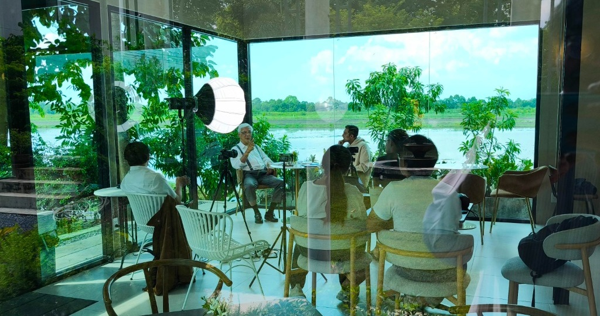

FOUR HOURS ABOVE THE FLOODS: THE SAGE OF PATHUM THANI ON SURVIVING THE MARKETS
Sanjay Popli of AlphaMind sits down with Chaloke Sambandaraksa on mindset, risk engineering, and why the CDC curriculum teaches planetary cycles to know when to step away from the desk.

I. The Flooded Plains
The interview began just after noon inside the glass pavilion in Pathum Thani, looking out across the drowned paddy fields still submerged from last month’s monsoon floods. For four unbroken hours, Chaloke Sambandaraksa laid bare five decades of market survival. Sanjay Popli, co-founder of Cryptomind and host of AlphaMind (alphamind.network / @alphamindpodcast), sat down with the legendary trader known simply to generations of Thai market practitioners as Uncle Chaloke. In a world obsessed with algorithmic scalping, meme tokens, and instant gratification, Chaloke opened by dismantling the central illusion of modern finance.
"I do not seek the most profitable trading system," he stated with quiet, total conviction. "Chasing maximum profit is the amateur’s fatal trap. I care only about the system that guarantees you cannot be destroyed."
II. Survival Over Profit
For Chaloke and the CDC curriculum he founded, trading is fundamentally an exercise in risk engineering and psychological discipline. Money management is not an afterthought; it is the entire foundation. If your position sizing permits a single black swan event to wipe out your capital, you are not trading—you are merely gambling on borrowed time.
"Survive first," he urged Popli. "When you master survival, the profits take care of themselves." In five decades navigating the 1987 crash, the 1997 Tom Yam Kung crisis, and the 2008 subprime contagion, he witnessed entire generations of chartists vanish because they mistook leverage for genius.
III. The First Rule
Before an entry is executed, the exit is already written. Survival requires knowing your ruin threshold before the order is filled. "The market will always test your weakest link," Chaloke remarked quietly, watching the brown floodwaters lap against the retaining wall. "Survive the storm first. The harvest always belongs to the patient."